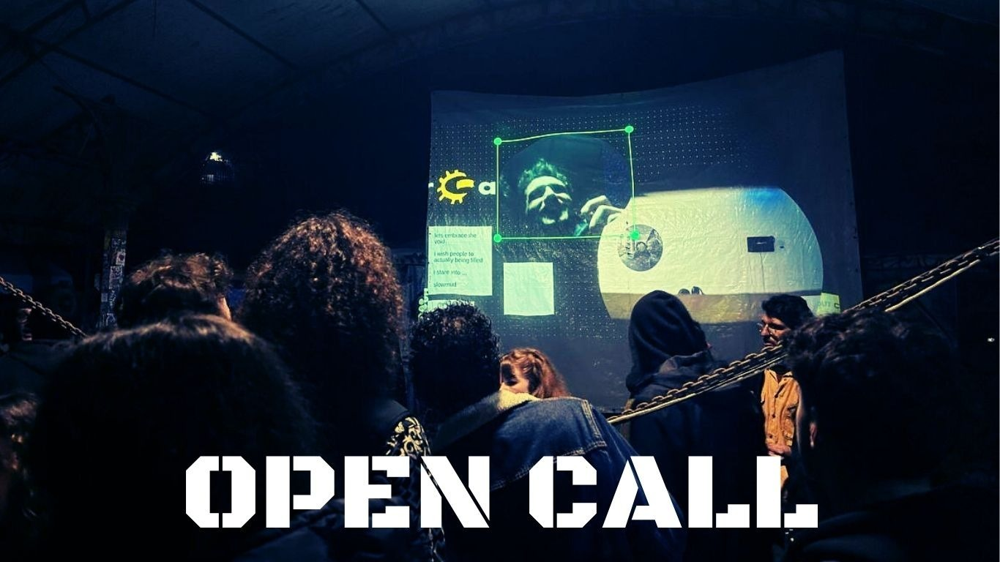

Call for Artist Residency
mur.at and the Collective Intelligence Association (CIA) are looking for a number of artists or collectives to participate in a 5‑day artistic residency and worklab in Graz, Austria. Throughout the year, mur.at has been collecting intelligence from artists, collectives, and passersby in Graz and beyond. The selected artists will together collaborate with CIA and the mur.at team to work with this collected material and develop an artistic investigation that may take the form of data‑mining art, a documentary on intelligence, a net art provocation, new software—or something entirely unexpected.
CIA is a branch of the CMKK community — an initiative based in Graz focused on computer music and sound art. CIA facilitates CIAPs – Collective Intelligence Access Points – interactive digital portals installed at events to connect simultaneous gatherings across distant locations. CIAPs also provide space for digital collective meet ups, brainstorming and feedback sessions, and documentation. Each CIAP is a live audiovisual node allowing public input, anonymous interaction, and collective presence across borders. The interface – a digital canvas facilitated by a physical installation – is developed by TAAT.live.agora and actively incorporates contributions from artists and audiences. In 2025, CIA collaborates with mur.at for a full year of events, experiments, and interventions focused on collective intelligence. Since 1999, mur.at has been building a physical and digital infrastructure, along with a community comprised by artists and cultural workers from diverse sectors, committed to developing and promoting net culture, sound art, software art, and media art. mur.at prioritizes Free/Libre & Open‑Source Software (F/LOSS) and supports unrestricted information flow and transparent knowledge transfer. It provides the technological backbone for a wide network of artists and initiatives, both in Austria and internationally.
Creative developers, activists, writers, and artists working in network art, sound art, media art, digital art, or related practices— anyone contributing to the development of network‑based artistic communities and interested in engaging with the topic of collective intelligence.
These questions will frame the process and collaborative investigation during the worklab:
These questions are a starting point of the discussions and could be changed completely if the participants find it necessary.
Participation in online meetings is required. The selected artists must be present during the entire period of the worklab.
Graz, Austria. mur.at facilities and/or esc medien kunst labor (the final presentation will take place there)
3 international and 3 Graz‑based artists will co‑curate and co‑develop the worklab/barcamp program and co‑host it.
Deadline: August 14, 2025 (applications reviewed on a rolling basis)
Notification: August 28 2025
Submit to: cia@mur.at
Questions: Ask on Mastodon: @murpunktat using #cia_mur2025 #worklab_mur2025
Selection is carried out by members of the CIA team, the mur.at board, and invited community members.